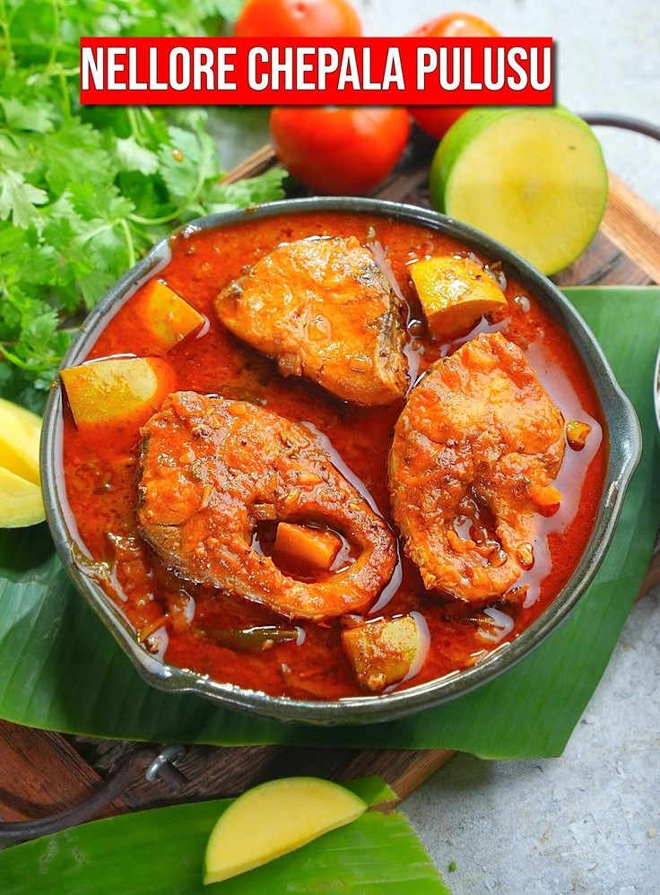

NELLORE CHEPALA PULUSU

HOME
Nellore Chepala Pulusu is arguably the most famous fish curry from Andhra Pradesh, known for its fiery spice, deep tanginess, and a signature thin, reddish gravy.
The secret to its legendary status lies in three things: raw mango, the absence of ginger-garlic paste (in the most traditional versions), and a special roasted spiceline powder added at the end.
The "Secret" Spiceline Powder
This is what gives the dish its unique aroma. Dry roast these and grind them into a fine powder:
- Fenugreek seeds (Methi): ½ tsp
- Mustard seeds (Avalu): 1 tsp
- Cumin seeds (Jeera): 2 tsp
- Coriander seeds (Dhaniyalu): 1 tbsp
Ingredients
- Fish: 1 kg (best with Korameenu or Rohu – bone-in is essential).
- Tamarind: A large lemon-sized ball (soaked and extracted into 2 cups of juice).
- Raw Mango: 1 medium (peeled and cut into thick slices).
- Aromatics: 1 large onion (chopped), 4–5 green chillies (slit), and 3–4 sprigs of fresh curry leaves.
- Spices: 3–4 tbsp red chilli powder (it should be spicy!), ½ tsp turmeric, and salt to taste.
- Oil: 5–6 tbsp (Gingelly/Sesame oil is traditional for the best flavor).
Steps
- Marination: Coat the fish pieces with a little salt, turmeric, and 1 tbsp of chilli powder. Let them sit for 15–20 minutes.
- The Base: Heat oil in a wide, thick-bottomed pan (ideally a clay pot). Add mustard seeds and a pinch of fenugreek seeds. Once they splutter, add onions, green chillies, and plenty of curry leaves. Sauté until onions are golden.
- The Pulusu (Gravy): Add tomato puree (optional) or just the remaining chilli powder and salt into the oil. Quickly pour in the tamarind extract and extra water. Bring this to a rolling boil.
- Adding Fish & Mango: Gently slide the fish pieces into the boiling gravy. Add the raw mango pieces now.
- Crucial Tip: Never use a ladle to stir once the fish is in. Instead, hold the sides of the pot and give it a gentle swirl to mix.
- The Finish: Once the fish is nearly cooked (about 8–10 minutes), sprinkle the Secret Spiceline Powder over the top. Simmer for another 2 minutes until the oil floats on top (Pai ki telina nune).
- Resting: Garnish with coriander leaves. Wait! The most important rule of Nellore Chepala Pulusu is to let it sit for at least 4–6 hours (or overnight). The fish absorbs the tanginess of the mango and tamarind as it cools.
View few more recipes